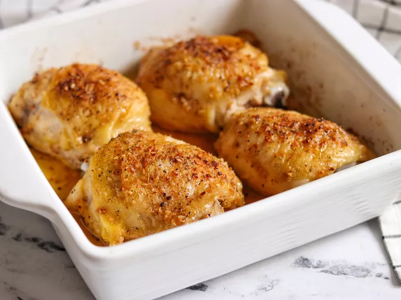

Easy Baked Chicken Thighs

Description
Low on time? Give this quick & delicious chicken thigh dinner recipe a try.
Done in under 40 minutes.
Ingredients
- 4 chicken thighs
- 4 teaspoons garlic powder
- 4 teaspoons onion flakes
Steps
-
Step 1
Preheat the oven to 375 degrees F(190 degrees C)
-
Step 2
Place chicken thighs in a baking dish;season both sliders
with garlic powder and onion flakes.
-
Step 3
Bake in preheated oven until no longer pink at the bone
and juices run clear, about 30 minutes. An instant-read
thermometer inserted into thickest part of thigh, near the bone,
should read 165 degrees F (74 degrees C)